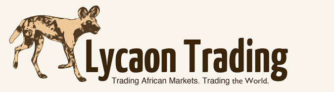

To donate: click here
Mentorship
As a South African business we know how important it is to give back to our community. For this reason we wish to uplift local South Africans through a mentorship program that offers young entrepreneurs the opportunity of learning how to build a sustainable income. This is achieved through instilling in them important business and life skills and teaching them how to provide for themselves through trading African markets. We are not just simply giving them a job, we are empowering them with skills that will sustain them throughout their lives.
That skill is to earn income for themselves from the financial markets. With this skill they are able to set up their own trading businesses. As an entrepreneurial company we believe that trading is a business and not a job. Each trader needs to run his or her trading like a business, taking responsibility for every aspect. In the process of learning trading, trainees will also learn work ethic, discipline and many other life skills that will assist them in their future endeavours.
Frequently Asked Questions
1. How long is the initial training period?
Our mentorship program has a duration of one year. We may hire permanent traders from the program after one year if there is an opening.
2. How do you qualify to join the program?
Besides Matric with strong English and Maths results, we have no formal educational requirements. However our interview ands assessment process will determine if applicants meet the basic requirements to enter the program.
3. What is the age range?
18-25
4. What is the commitment?
It is a serious commitment.To become a professional trader you need dedication and unrelenting drive in order to succeed.
5. Outside of the trading, do trainees earn anything?
No salary, but they get to keep some of trading profits.
6. Is the mentorship only for those previously disadvantaged?
No, all are welcome to apply but preference will be given to those who are currently disadvantaged.
If are you interested in joining the Lycaon Trading Mentorship program, contact us at
mentorship@lycaontrading.comVision Statement
 "My vision is of creating a business built on providing a service and product that will benefit society, whilst taking us as professional traders on a journey of self discovery and improvement. The goal in trading and in life is for us to be the best that we possibly can be."
JK Rentzke
"My vision is of creating a business built on providing a service and product that will benefit society, whilst taking us as professional traders on a journey of self discovery and improvement. The goal in trading and in life is for us to be the best that we possibly can be."
JK Rentzke
Ideas On StockTwits
Our Partners